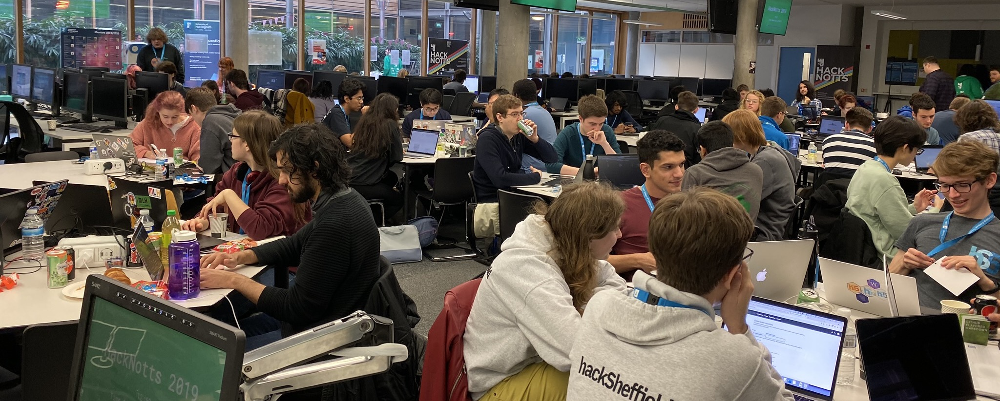
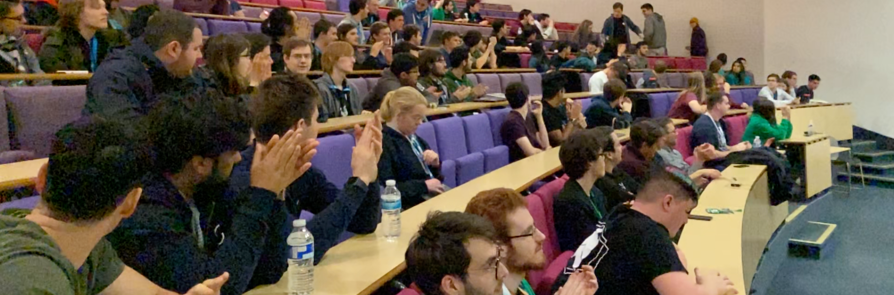
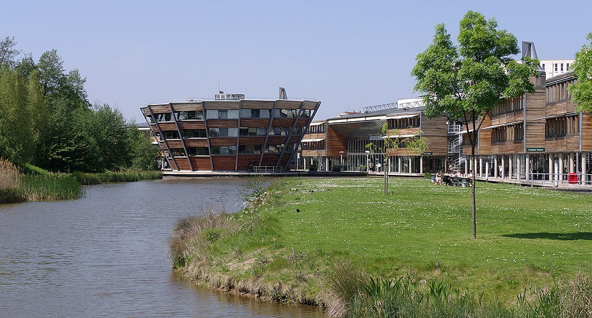

HackNotts is an annual hackathon, hosted by HackSoc at the University of Nottingham. It's a two-day overnight coding challenge for all skill levels taking place on the weekend of February 12th, 2022.
What is HackNotts?
Students from all over the country come along every year to build cool things, learn new skills, and meet new people. Aside from the hacking, we and our sponsors will be running workshops and games throughout the hackathon, to keep you entertained.
HackNotts is a great opportunity to meet people. If you don't have a team, feel free to come along to our team-building session - there will certainly be others will similar interests. Teams of up to four are allowed, so it's also the perfect chance to get all your friends together to finally do that project you've been talking about.
On top of that, there's free food, including lunch, dinner, breakfast and midnight pizza! Plus, snacks and drinks are provided at all times. It's a long event, but you certainly won't go hungry.
What do I do?
Wondering what kind of thing you can make? The answer is: anything! The only requirement is you're making something during the 24 hours, but as for what that thing is, your options are endless. In the past, people have made games, websites, robots, AI projects, AR/VR experiences, web APIs, hardware projects, and much, much more.
Some amazing things have been made at our previous hackathons, but don't be discouraged if you're only just getting started with coding. We have a prize category specifically for beginners, and it's a brilliant place to improve your skills.
There will also be prizes! Enter into any number of our extensive list of prize categories to find something that suits you, and you could be going home with a cool new gadget!
Need inspiration? Have a look through the project galleries for HackNotts 2019 and 2020.
Where is HackNotts?
HackNotts is going to take place mostly in the Computer Science building on the University of Nottingham's Jubilee Campus. For directions and more, see here.
Volunteering
HackNotts is made possible because of its wonderful volunteers. If you'd like to help out on the day instead of participating yourself, volunteers are always welcome! This could include anything from mentoring or helping out with games to just showing people around the building. It's useful if you're a student at Nottingham, but not essential by any means.
You'll still get the free food and swag, but on top of that you'll get a free t-shirt for helping out! If you're interested, get yourself a volunteer ticket, and please contact us if you have any questions. Please note, however, that you cannot participate in HackNotts if you're a volunteer.